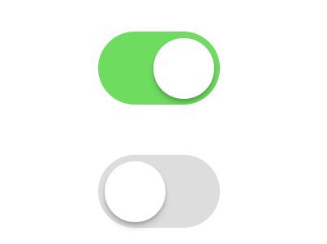
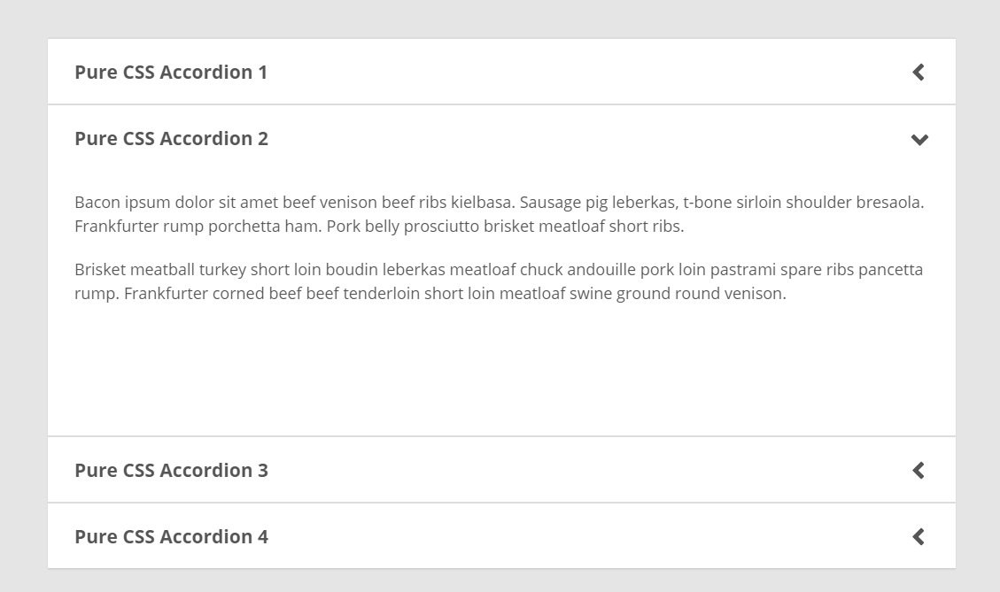
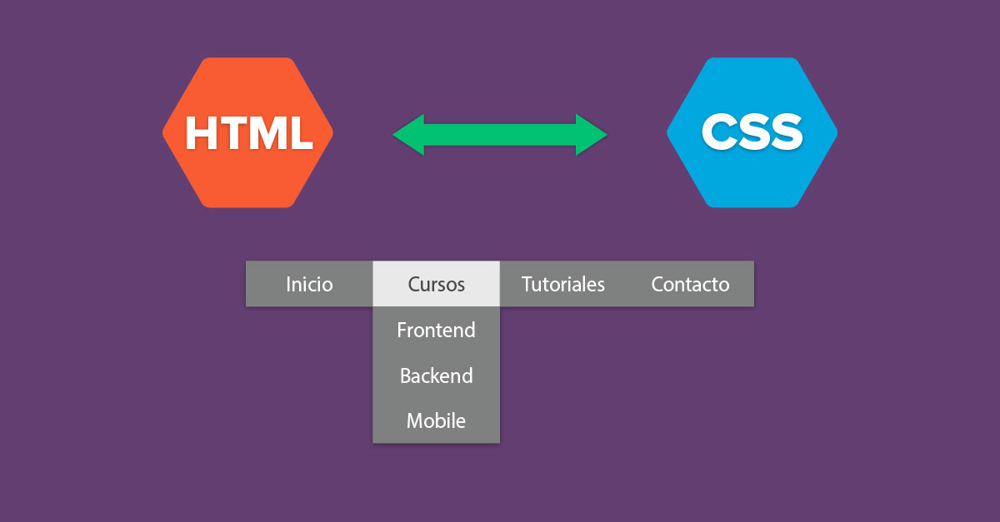

Toggle Switch
El Toggle Switch tiene la misma función que un checkbox pero es mucho más moderno y atractivo visualmente.
Leer más

Acordeón Desplegable
El Acordeón es un elemento dinámico que nos ayuda a desplegar información de forma ordenada.
Leer más

Menú Desplegable
Un Menú Desplegable brinda un resumen de enlaces, agrupándolos en categorías o brindando enlaces directos a páginas importantes.
Leer más